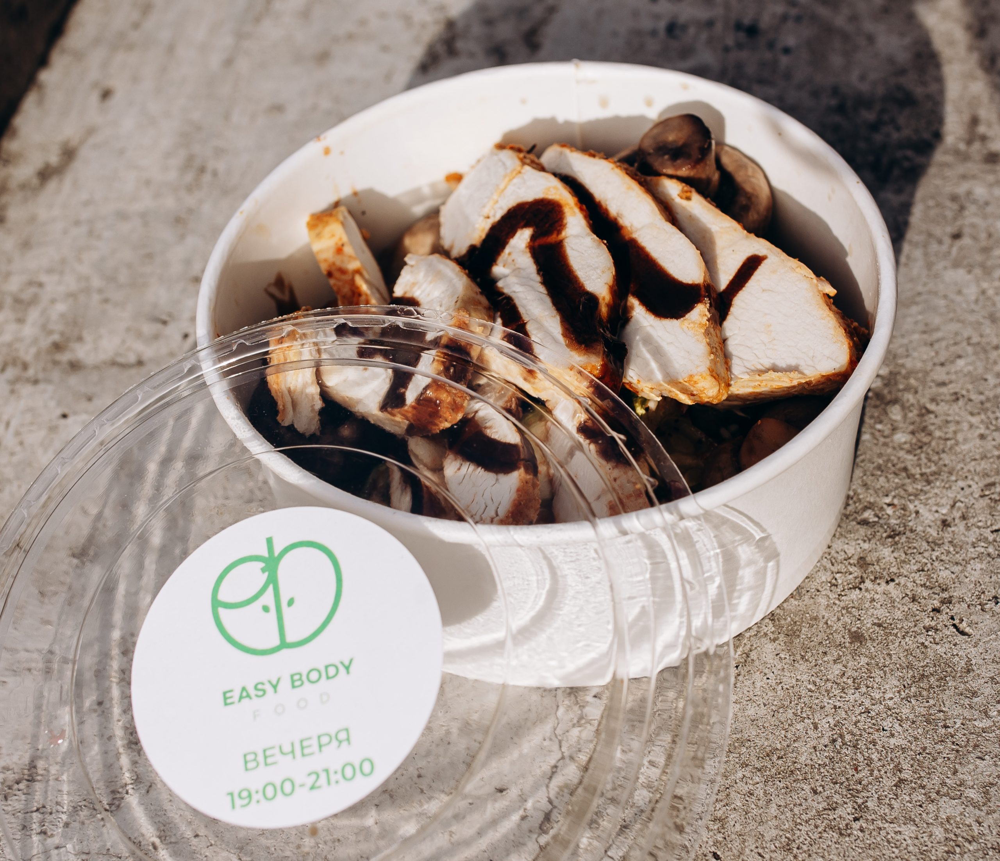

Спеціально розроблене нутриціологом Микитою Бондаренком для активного та збалансованого способу життя
Микита Бондаренко
Експерт з харчування, якому довіряють медіа, спортсмени та тисячі людей по всій Україні.
Працює з професійними атлетами, активними людьми, молодими мамами — та кожному підбирає раціон, як костюм: по фігурі, меті й темпу життя.
Його філософія проста: "Раціон має бути не про жертви, а про свободу".
❤+
Гречкий салат із фетою та медово-гірчичною заправкою
Б: 6 г; Ж: 17 г; В: 8 г; 215 ккал
Легендарна класика в авторській інтерпретації Микити Бондаренка: хрусткі огірок, чері, болгарський перець, оливки, фета та окрема подача медово-гірчична заправка, щоб зберегти текстуру й свіжість.
❤+
Яловичина гриль з авокадо та овочами на пару
Б: 6 г; Ж: 17 г; В: 8 г; 385 ккал
Високобілкова страва з ніжної яловичини, обсмаженої на грилі, з міксом стручкових овочів та авокадо для здорових жирів. Лимон додає нотку кислинки, яка активує травлення.

❤+
Горіхово-вівсяний мікс із кокосовою стружкою
Б: 6 г; Ж: 17 г; В: 8 г; 210 ккал
Фірмовий перекус від Микити: поєднання фундука, мигдалю, кеш'ю та вівсянки з вівсяними пластівцями, присипаними кокосовою стружкою.
❤+
Лазанья з індичкою та соусом бешамель
Б: 6 г; Ж: 17 г; В: 8 г; 390 ккал
Домашній комфорт у здоровому виконанні: ніжне філе індички, цільнозерновий лист та легкий соус бешамель із мінімумом жиру. Без надлишку солі та без важкості після.